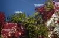
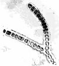

B) Claves y catálogo
| Página de procedencia: | Algas_rojas.htm | |
|
| Contenido de esta página: | 1.- Características de los órdenes | ||
| 2.- Cuadro Resumen | |||
| 3.-
Más datos: ==> |
A) Esquema taxonómico B) Claves y catálogo |
||
|
Acrochaetiales |
Gracillariales | Porphyridiales | |
| Bonnemaissoniales | Hildenbrandiales | Rhodymeniales | |
| Compsogonales | Nemaliales | ||
| Para las referencias véase | Algas_bibliografia.html | ||
| Para los términos véase: | Ecología y distribución: |
Algas_Introduccion.htm |
|
| Tipos de talo: |
Biologia_Marina.html |
||
| Específicos de algas rojas: |
Algas_rojas.htm |
||
| Acrochaetiales (Floridofíceas) |
|
| Bonnemaissoniales (Floridofíceas) | |
|
 |
| Compsogonales (Bangiofíceas) | |
|
 |
| Gracillariales (Floridofíceas) | |
|
 |
| Hildenbrandiales (Floridofíceas) | |
|
 |
| Nemaliales (Floridofíceas) | |
|
 |
| Porphyridiales (Bangiofíceas) | |
 |
|
| Rhodymeniales (Floridofíceas) | |
|
 |
| Géneros |
Especies y
características de los talos |
|||
|---|---|---|---|---|
| Asparagopsis |
|
|||
| Chylocladia |
|
|||
| Erytrotrichia |
|
|||
| Gracillaria | Talo
pseudoparenquimático; formado por ramas cilíndricas agudas o por láminas dicotómicas
|
|||
| Hildenbrandia |
|
|||
| Lyagora |
L. distenta Talo ligeramente calcificado, blanco |
|||
| Nemalion |
N. helminthoides Talo cilíndrico con ramificación basal |
|||
| Scinaia |
|
|||
| Stylonema |
|
| Cl. Bangiophyceae (= Bangioideas)* | |||
| Órdenes |
Familias |
Géneros | |
| Compsogonales | Erytropeltidiaceae |
Erythrotrichia |
Shalingia |
| Porphyridiales |
Goniotrichaceae |
Stylonema | |
| 2
órdenes |
2
familias |
3 géneros |
|
| * El or. Bangiales
se trata en fichero Bangiales.html |
|||
| Cl. Rhodophyceae (= Florideas)* | ||||
| Órdenes |
Familias |
Géneros |
||
| Acrochaetiales |
Acrochaetiaceae |
Audouinella |
||
| Bonnemaissoniales |
Bonnemaissoniaceae |
Asparagopsis |
Bonnemaissonia | |
| Gracillariales |
Gracillariaceae |
Gracillaria | ||
| Hildenbrandiales | Hildenbrandiaceae |
Hildenbrandia |
||
| Nemaliales | Chaetangiaceae |
Scinaia |
||
| Helminthocladiaceae |
Helminthocladia |
Liagora | ||
| Naccariaceae |
Atractophora |
|||
| Nemaliaceae |
Nemalion |
|||
| Rhodymeniales | Champiaceae |
Champia |
Chylocladia | Gastroclonium |
| Lomentariaceae |
Lomentaria |
|||
| Rhodymeniaceae |
Botryocladia |
Chrysimenia |
Cordylecladia | |
| Fauchea | Rhodymenia |
|||
| 6 órdenes |
11
familias |
19 géneros |
||
| * Los órdenes Bangiales, Ceramiales, Corallinales, Gelidiales y Gigartinales se tratan en páginas aparte | ||||
| I) Orden Acrochaetiales |
*Audouinella Bory,
1823. Acroquetiáceas. Nada menos que 33 especies citadas en la
Península (13 en el Atlántico, otras 10 en el
Mediterráneo y 10 en ambos mares). Filamentos uniseriados
microscópicos (hasta 2 mm de altura), frecuentemente formando
fieltros epífitos o hiperepífitos. Es un género
que no suele tenerse en cuenta en los estudios de macrofitobentos,
debido a su tamaño microscópico y a la dificultad para la
identificación de sus especies. A continuación recogemos
las citas publicadas para el Atlántico andaluz:
| Especies |
Localidades |
Autores |
|
| A. daviesii
(Dillwyn) Woelkerling, 1971 |
Filamentos
erectos hasta 10 mm, ramificados irregularmente en un plano, naciendo
de filamentos rastreros adheridos
entre sí |
Huelva: Punta de Afuera de Ayamonte (espigón de
poniente) en Diciembre |
Navarro & Gallardo (1994) |
| Completamente
microscópica; filamentos erectos hasta 0,2 mm, que nacen de
aislados sobre una única
célula basal, ramificados irregularmente |
|||
| A. parvula (Kylin) Dixon | Completamente microscópica; filamentos erectos hasta 0,1 mm, que nacen agrupados sobre una única célula basal, ramificados irregularmente | ||
| A. thuretii (Born.) Woelkerling | Filamentos
erectos hasta 3 mm, ramificados irregularmente, terminados en una zona
mucho más estrecha, como un pelito, naciendo de filamentos rastreros adheridos entre
sí |
Ídem,
en Marzo |
Flores-Moya & al. (1994) |
| A. trifila (Buffham) Dixon | Como
A. parvula, pero con los
filamentos formados sólo por 3 ó 4 células. |
Cádiz |
Conde (1984, según Conde & al., 1996) |
Asparagopsis Mont.,
1841. Bonnemaisoniáceas. La única especie de la P.I.
(Atlántico y Mediterráneo) se introdujo al parecer en
Europa en época histórica
procedente de Australia, siendo encontrada por primera vez en 1925 por
Sauvageau (según Seoane,
1965: 97)
A. armata Harv.,
1855. La fase gametofítica es estolonífera y forma
colonias densas que se agarran a otras algas. Muy frecuente y abundante
desde Cádiz hasta Algeciras durante casi todo el año
(Seoane-Camba, 1965), con un máximo desarrollo en Marzo y
mínimo en verano. Infralitoral de sustrato duro. Cosmopolita. La
fase tetrasporofítica del ciclo vital de esta especie difiere
notablemente del gametofito, habiendo recibido el nombre de "Falkenbergia rufolanosa (Harv.) F.
Schmitz, 1897" (Feldmann & Feldmann,1952). La fase filamentosa es
epífita y frecuente en el Sector del Estrecho (Seoane-Camba,
1965).
B. asparagoides
(Woodw.) C. Agardh, 1822. Muy rara en Cádiz, arrojada en la
Playa de la Victoria (Seoane-Camba, 1965). Esciófila
infralitoral de zonas calmas. Atlántica boreal.
| III) Orden Compsogonales | ||
| 1. |
Talo submicroscópico en
forma de disco epífito |
|
| 1. |
Talo submicroscópico de
forma de filamento simple, generalmente epífito |
Erythrotrichia carnea |
Erythrotrichia J.
Areschoug, 1850. Eritropeltidáceas. Probablemente sean
sólo dos las especies ibéricas de este género (una
de ellas exclusivamente atlántica), según la sinonimia
que indica Heerebout (1968).
E. carnea
(Dillwyn) J. Agardh, 1883. Poco frecuente en Huelva. Observada como
epífito de Cystoseira en
el Dique Juan Carlos I (Huelva) por alumnos de Criptogamia en 1988.
Citada en Ayamonte e Isla Cristina (Huelva) por Flores-Moya & al.
(1994). Eutrófica y tionitrófila. Cosmopolita.
| IV) Orden Gracillariales |
Gracillaria Grev., 1830. Gracilariáceas. El número de especies citadas en la P.I. asciende a 9 (2 atlánticas, otras 2 mediterráneas y las 5 restantes en ambas orillas).
| 1. | Talo aplanado, con lacinias
relativamente anchas (las inferiores 1 cm o más) |
G. multipartita |
| 1. |
Talo cilíndrico o
comprimido, pero estrecho (ramas hasta 5 mm de anchura) |
2 |
| 2. |
Talo
comprimido y quebradizo |
|
| 2. |
Talo
generalmente no comprimido,
rígido o muy elástico |
3 |
| 3. |
Talo elástico, con ramas distanciadas de grosor uniforme | G. verrucosa |
| 3. |
Talo rígido, con ramas de
menor grosor en la parte apical |
4 |
| 4. |
Fijación
por ramas
rastreras estoloníferas; ramificación fastigiada (ramas
agrupadas en la parte superior y dirigidas hacia arriba) |
G. dura |
| 4. |
Fijación
por un disco;
ramificación radial |
G.
armata |
G. verrucosa
(Huds.) Papenfuss, 1950. Citada en Cádiz por Clemente en 1807
(según Conde & al., 1996). Frecuente en Huelva (Conde &
al., 1990; Navarro & Gallardo, 1994). Fotófila de zonas
calmas. Cosmopolita. Talo pseudoparenquimático
cilíndrico, de color púrpura oscuro, fijado mediante un
disco basal; ramificación radial (subdicotómica, lateral
o irregular). Con frecuencia presenta agallas de origen bacteriano.
Especies parecidas: Cystoclonium
purpureum, con hapterios ramificados y célula
apical visible, y Gigartina
acicularis, más rígida, con médula
filamentosa y ápices acuminados.
| V) Orden Hildenbrandiales |
Hildenbrandia Nardo,
1834. Hildenbrandiáceas. Cuatro especies dadas para nuestro
litoral. (1 atlántica, otra mediterránea y 2 en ambos
mares).
H. rubra (Sommmerfelt) Meneghini, 1841 (= H. prototypus Nardo).
Frecuente desde Cádiz a Tarifa, recubriendo rocas y
cantos rodados del mesolitoral medio e inferior, formando manchas no
calcificadas de color rosa, rojo o púrpura (Seoane-Camba, 1965).
Grutas mesolitorales. Probablemente cosmopolita.
Atractophora Crouan
frat., 1848. Nacariáceas. Una sóla especie
atlántica.
A. hypnoides Crouan frat., 1848. Muy rara. Arrojada en la Playa de la Victoria (Seoane-Camba, 1965). Atlántico boreal oriental. Gametofito uniaxial, con ejes jóvenes filamentosos que son más tarde rodeados por filamentos laterales que se fusionan parcialmente hasta adquirir el talo un aspecto pseudoparenquimático peloso. No se conocen las tetrasporas; al parecer los gametofitos nacen directamente de las carposporas.
Helminthocladia J. Agardh, 1852. Helmintocladiáceas. Dos especies atlánticas.
| 1. | Talo de hasta 60 cm y 6 mm de diámetro | H. calvadosii |
| 1. |
Talo de hasta 20 cm y 2 mm de diámetro | H. stackhouse |
*H. calvadosii (Lamour.)
Setch., 1915. Muy rara en Cádiz, encontrada en la Playa de
Bolonia por un alumno de Biología en 1994. La cita requiere
confirmación. Atlántico boreal oriental. Talo
gametofítico pseudoparenquimático cilíndrico,
mucoso, compacto cuando joven y hueco y retorcido cuando maduro, con
ejes erectos simples o ramificados de forma lateral. La fase
tetrasporofítica es filamentosa y microscópica, parecida
a Audouinella.
H. stackhousei
(Clemente) Cremades, 1993 (= H.
hudsonii J. Agardh?; Helminthora
divaricata J. Agardh). Muy rara, sólo conocemos el
ejemplar citado por Cremades (1993) procedente de Cádiz
(Cremades & Pérez-Cirera, 1990a: fig. 1). Atlántico
boreal oriental.
| 1. | Talo con grupos de ramas
laterales, de color verdoso y puntas rojizas |
|
| 1. |
Talo sin ramificaciones de tipo
lateral, de color blanco y puntas rosas o violetas |
L. viscida |
L. distenta
(Roth) C. Agardh, 1822. Frecuente en Cádiz desde Sanlúcar
hasta Barbate, arrojada en verano (Seoane-Camba, 1965). Fotófila
infralitoral de zonas calmas. Holo indo-atlántica. Talo
gametofítico cilíndrico, de color verdoso con puntas
rojizas, con ejes dicotómicos y ramas laterales, impregnado de
carbonato cálcico, duro pero flexible. Tetrasporofito
microscópico.
L. viscida
(Forsskal) C. Agardh, 1822. Muy rara en Cádiz, recolectada
solamente en Punta Carnero (Algeciras) por Flores-Moya & al.
(1994). Fotófila. Atlántico boreal oriental. Difiere de L. distenta por su color blanco con
puntas más o menos rosas o violetas y por carecer de
ramificación lateral.
N. helminthoides
(Velley) Batters, 1902. Frecuente en el sector del Estrecho de
Cádiz (Seoane-Camba, 1965). Mesolitoral. Rocas mesolitorales del
horizonte medio. Subcosmopolita. Talo pseudoparenquimático
cilíndrico, blando y mucilaginoso, con ejes erectos simple o muy
ramificados de forma subdicotómica o irregular. Fase
tetrasporofítica de tipo Audouinella.
| 1. | Sifones centrales
cláramente visibles en material seco de herbario; ramas de 2-4
mm de diámetro |
S.
turgida |
| 1. |
Sifones centrales no visibles en material seco de herbario; ramas de 1-3 mm de diámetro |
S.
forcellata Bivona-Bernardi,
1822 [= S. pseudocrispa
(Clemente) Wynne]. Poco frecuente en Cádiz,
arrojada en verano en Cádiz capital y Tarifa
(Seoane-Camba, 1965). También encontrada arrojada en Punta
Umbría (Huelva) por Conde & al.(1990). Holo
atlanto-pacífica. La descripción original corresponde a
la fase gametofítica, que es un talo pseudoparenquimático
tubular, cilíndrico o aplanado, muy viscoso, con médula
filamentosa, multiaxial, ramificado dicotómicamente de forma
regular y en tres dimensiones. La fase tetrasporofítica
sólo se conoce en cultivo a partir de las carposporas, y es
filamentosa uniseriada y microscópica, semejante al
género Audouinella.
S. turgida
Chemin, 1926. Recogida mediante arrastre en Barbate (Cádiz) por
Flores-Moya & al. (1994). Atlántica boreal oriental.
Atlántica en la Península. Se diferencia de S. forcellata por tener un talo
algo mayor, con ramas más anchas y sifones centrales visibles en
material de herbario.
| VII) Orden Porphyridiales |
Stylonema Reinsch
(= Goniotrichum Kütz.).
Goniotricáceas. Dos especies en el Atlántico y el
Mediterráneo.
S.
alsidii (Zanard.)
Drew [= Goniotrichum alsidii (Zanard.)
M. Howe; G. elegans
(Chau.) Le Jolis]. Poco frecuente en Cádiz, como epífita
o hiperepífita (Seoane-Camba, 1965) y en Huelva (Navarro &
Gallardo, 1994). Infralitoral de sustrato
duro. Cosmopolita.
S. cornu-cervi
Reinsch. Citada en Ayamonte (Huelva) por Navarro & Gallardo (1994).
Botryocladia
Kylin,
1931. Rodimeniáceas. Son cuatro las especies citadas en la P.I.
(dos de ellas sólo en el Mediterráneo). Talo formado por
vesículas huecas sobre estipes más o menos ramificados.
B. botryoides
(Wulfen) J. Feldm., 1941. Poco frecuente en Cádiz, de Cabo Roche
a Barbate, en fisuras del mesolitoral inferior (Seoane-Camba, 1965).
Esciófila superficial de zonas batidas y cálidas.
Atlántica boreo-tropical.
Champia
Dervaux,
1809. Campiáceas. Una especie atlántica y
mediterránea en la P.I.
C. parvula (C.
Agardh) Harv., 1853. Frecuente en Cádiz durante casi todo el
año (Seoane-Camba, 1965), como epífito de algas de gran
porte (Cladostephus, Cystoseira, Gelidium latifolium, Halopitys, Halopteris scoparia y Pterocladia). También citada
en Punta Umbría (Huelva) por Conde & al. (1990).
Esciófila de zonas calmas. Cosmopolita.
Chrysimenia J.
Agardh, 1842. Rodimeniáceas. Una sola especie citada en el
Mediterráneo y en Cádiz.
C.
ventricosa (Lamour.) J. Agardh, 1842 (= Halymenia ventricosa C.
Agardh). Citada por Agardh en 1823 (según Conde & al.,
1996). Mediterránea. Talo cilíndrico y hueco, gelatinoso,
translúcido, con ramificación pinnada. Esciófila.
Atlántico boreal.
Chylocladia Grev.
ex Hook., 1833. Campiáceas. Dos especies atlánticas y
mediterráneas en la P.I.
C. verticillata
(Lightf.) Bliding, 1928. Frecuente en Cádiz durante el invierno
y la primavera como epífito de Cystoseira,
Halopitys y Pterocladia (Seoane-Camba, 1965).
Rara en Huelva, arrojada en Punta Umbría (Conde & al.,
1990). Fotófila infralitoral de zonas calmas. Atlántica.
Indo-atlántica templado-fría.
Cordylecladia
J. Agardh, 1852. Rodimeniáceas. Una sola especie en ambas
orillas de la Península.
C.
erecta (Grev.) J. Agardh, 1852. Citada por Conde & al.
(1996b) como epífito de Valonia
utricularis en la Isla de las Palomas (Tarifa, Cádiz).
Sin datos de morfología y distribución.
Fauchea Bory
& Mantagne, 1846. Rodimeniáceas. Dos especies citadas en la
península, una de ellas sólo en el Mediterráneo.
Talo aplanado dicotómico.
| 1. | Talo con segmentos de anchura
uniforme, rojo, de superficie brillante |
F. repens |
| 1. |
Talo con segmentos anchos
separados por otros filiformes, rosa, no brillante |
Gastroclonium Kütz.,
1843. Campiáceas. Tres especies en la P.I. (2 atlánticas
y otra en ambos mares). La información sobre este género
no está aún actualizada. Talo cilíndrico terminado
en ramitas huecas.
| 1. | Talo terminado en ramitas huecas
en forma de vesículas simples, no tabicadas |
G. ovoatum |
| 1. |
Talo terminado en ramitas huecas tabicadas | 2 |
| 2. |
Talo
formado por un estipe relativamente largo (más de 10 mm)
terminado en una penacho de ramas vesiculares septadas |
|
| 2. |
Talo
formado por un estipe relativamente corto (menos de 5 mm) terminado en
ramas vesiculares septadas largas y ramificadas, recurvadas |
G. reflexum |
G. clavatum
(Rothpletz) Ardissone, 1883. Rara en Cádiz, como epífita
de Cladostephus, Cystoseira y Halopteris scoparia en Tarifa y La
Caleta (Seoane-Camba, 1965). Cornisa mesolitoral.
G. ovoatum
(Hudson) Papenfuss, 1944. Citado de la provincia de Cádiz por
Conde (1992, según Conde & al, 1996). Atántico boreal
oriental. Atlántica en la Península.
G. reflexum
(Chauvin) Kütz., 1849. Encontrada en Ayamonte (Huelva) por Navarro
& Gallaedo (1994). Atlántica.
Lomentaria Lyngb.,
1819. Lomentariáceas. Nueve especies en nuestras costas (1
atlántica, 6 mediterráneas y 2 en ambas orillas).
| 1. | Ramificación
dicotómica |
L. articulata |
| 1. |
Ramificación de tipo
lateral |
L. clavellosa |
L. articulata
(Hudson) Lyngb., 1819. Poco frecuente, en fisuras mesolitorales de la
Bahía de Cádiz y Sector del Estrecho (Seoane-Camba,
1965).
Esciófila superficial de zonas batidas y frías.
Atlántica boreal. Talo hueco, aplanado y articulado, con
ramificación dicotómica.
L. clavellosa
(Turner) Gaillon, 1828. Citada de la provincia de Cádiz por
González-Fragoso en 1886 (según Conde & al., 1996).
Poco frecuente en Huelva, de donde ha sido citada en Ayamonte y en
Punta Umbría por Navarro & Gallardo (1994). Fotófila
infralitoral. Atántico boreal. Talo hueco, aplanado y
articulado, varias veces ramificado de forma lateral.
Rhodymenia Grev.,
1830. Rodimeniáceas. Cinco especies en la Península, 2
atlánticas y 3 mediterráneas.
R. pseudopalmata (Lamour.) Silva, 1952. Citada de la provincia de Cádiz por González-Fragoso en 1886 (según Conde & al., 1996). Láminas dicotómicas de anchura creciente hacia el ápice, sobre un estipe simple. Atlántico boreal oriental. Atlántica.